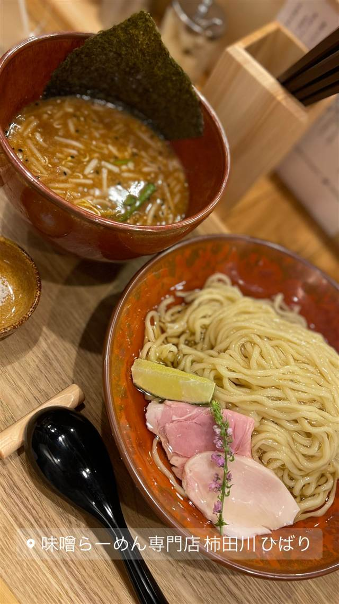

和食・定食 · 定食・食堂 · 清水町
母さんのしょうが焼き
専門店がないという思いから生まれたしょうが焼き定食
母さんのしょうが焼き
静岡県駿東郡清水町で2017年に開業したしょうが焼き専門店。「食べたいのに専門店がない」という思いから始まり、今では三島・沼津・静岡にも店舗を広げている。
TRIVIA
豆知識
- 「しょうが焼きが好きなのに専門店がない」という思いから開業した専門店
REVIEWS
世間の評判
3.38食べログ
小盛りでもご飯の量が多い
- ライスを小にしても量がかなり多いので注意が必要だという声が非常に多い
- おかえりなさいといってらっしゃいの温かい挨拶を評価する声が多い
- 味噌や塩トマトチーズなど味のバリエーションの豊富さという声がある
- 家庭的な味だが特別に美味しいわけではないという評価も一部にある
食べログ 口コミ100件
| 創業 | 2017年10月開業（清水町・本店） |
|---|---|
| 看板 | しょうが焼き定食 |
| どこから | 日帰りで行ける遠さ |
| 営業時間 | 月〜金 11:00-15:00、17:00-21:00 土・日 11:00-21:00 |
| 予算 | 昼 ～¥999 夜 ¥1,000～¥1,999 |
| 定休日 | 無休 |
| 場所 | 三島広小路駅 静岡県駿東郡清水町玉川61-4 |
| メモ | 本店（清水町）のほか三島・沼津・静岡にも展開。 |
食べたもの：しょうが焼き定食
NEARBY
近い店・同じ系統の店
-

つけ麺 三島広小路駅 味噌らーめん専門店 柿田川ひばり 清水町店 ど・みそ直伝、火入れしない5種の生味噌の濃厚味噌らーめん 昼 ～¥999 夜 ¥1,000～¥1,999 -
 定食・食堂 秋葉原駅
青島食堂 秋葉原店
新潟・長岡発祥、生姜を効かせた豚骨醤油ラーメン
昼 ～¥999 夜 ～¥999
定食・食堂 秋葉原駅
青島食堂 秋葉原店
新潟・長岡発祥、生姜を効かせた豚骨醤油ラーメン
昼 ～¥999 夜 ～¥999
-
 定食・食堂 四ツ谷駅
かつれつ 四谷たけだ
1935年築地創業「洋食たけだ」の流れを汲む、食べログ百名店の生姜焼き定食
昼 ¥1,000～¥1,999 夜 ¥1,000～¥1,999
定食・食堂 四ツ谷駅
かつれつ 四谷たけだ
1935年築地創業「洋食たけだ」の流れを汲む、食べログ百名店の生姜焼き定食
昼 ¥1,000～¥1,999 夜 ¥1,000～¥1,999
-
 定食・食堂 広尾
麻布食堂
1992年創業、卵たっぷりのオムライスとハンバーグの洋食店
昼 ¥1,000～¥1,999 夜 ¥3,000～¥3,999
定食・食堂 広尾
麻布食堂
1992年創業、卵たっぷりのオムライスとハンバーグの洋食店
昼 ¥1,000～¥1,999 夜 ¥3,000～¥3,999
-
 定食・食堂 五反田
あげ福
ミート矢澤と同じ精肉卸が営む、岩中豚のコロッケ定食
夜 ¥3,000～¥3,999
定食・食堂 五反田
あげ福
ミート矢澤と同じ精肉卸が営む、岩中豚のコロッケ定食
夜 ¥3,000～¥3,999
-
 定食・食堂 渡久地
きしもと食堂(本店)
薪の木灰の上澄み液をかん水代わりに使う戦前からの製法で今も麺を打つ
昼 ¥1,000～¥1,999 夜 ¥1,000～¥1,999
定食・食堂 渡久地
きしもと食堂(本店)
薪の木灰の上澄み液をかん水代わりに使う戦前からの製法で今も麺を打つ
昼 ¥1,000～¥1,999 夜 ¥1,000～¥1,999